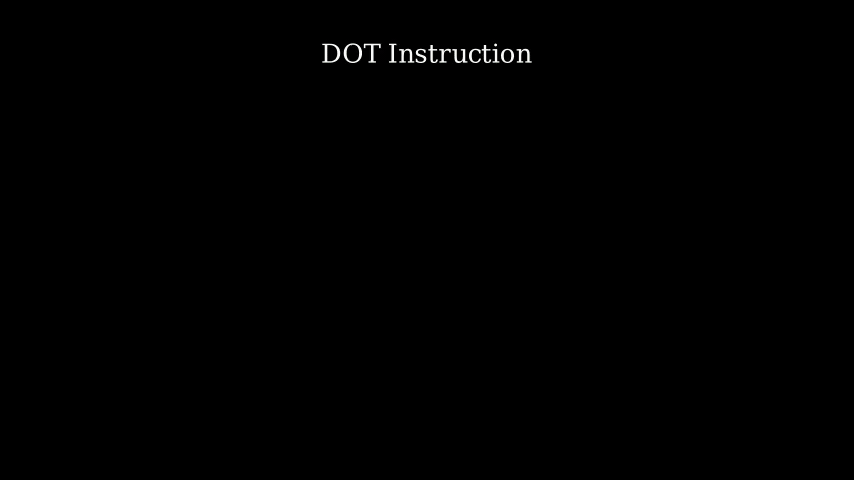
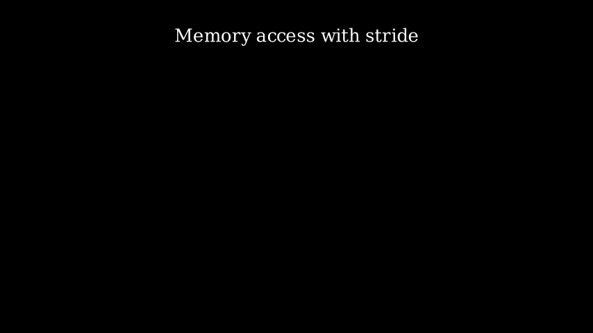
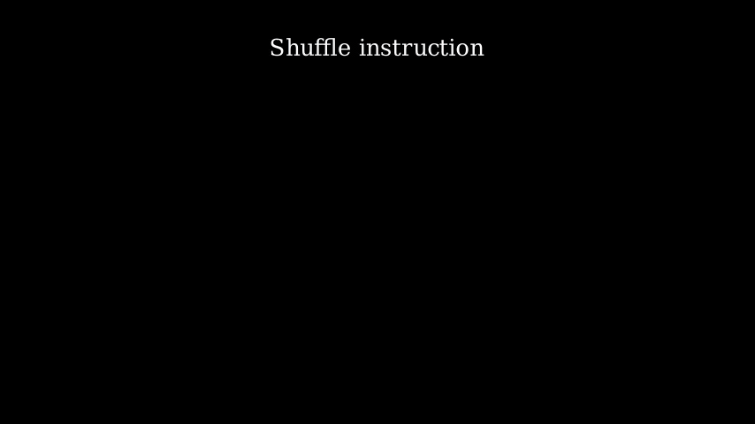

ISA Scenes
When users want to create one animation for ISA, import isa_manim at the start of the source file.
Then, like Manim, one class should be created to describe the behavior within the animation. The class should choose one of SingleIsaScene and MultiIsaScene as the base class.
from isa_manim import SingleIsaScene
class TestSingleIsaScene(SingleIsaScene):
...
Or
from isa_manim import MultiIsaScene
class TestMultiIsaScene(MultiIsaScene):
...
The differences between SingleIsaScene and MultiIsaScene lie in the layout of scenes.
Both SingleIsaScene and MultiIsaScene separate the scene into the title and zoom parts. The zoom part contains objects (registers, functions, and memory units) and performs animations. When adding new objects or removing some objects from the scene, the zoom part will be scaled or moved to fit all objects within the middle of the scene.
The title part does not scale during animations. SingleIsaScene only provides one title in the title part. MultiIsaScene provides both the title and subtitle in the title part. The title remains the same, but the subtitle can change during animation.
SingleIsaScene.draw_title and MultiIsaScene.draw_title draw the title on the scene. MultiIsaScene.draw_subtitle fades in the subtitle.
The animation class should overwrite the behavior of the function construct_isa_flow. In the construct_isa_flow, users do not need to pay much attention to the animation flow but focus on describing the behavior of instructions. Within construct_isa_flow, users can use the APIs provided in Animation APIs
It is not recommand to apply objects and animations provided in
isa_manim.isa_objectandisa_manim.isa_animatedirectly. It is a little complex to create a new object and a kine of animation in the animation classes.
ISA Animation Flow Management
ISAManim made a significant effort to hide the animation flow management behind the APIs that describe the instruction behavior.
First, ISAManim automatically places objects (register, function, and memory units) on the scene. See Placement for details.
Then, ISAManim schedules animations according to the dependency between animations. Manim APIs are hidden behind ISAManim APIs. See Animation Flow for details.
For example, users can expand the loop manually and play animations simultaneously for vector instructions.
opa_list = [self.read_elem(zn, e) for e in range(0, elements)]
opb_list = [self.read_elem(zm, e) for e in range(0, elements)]
res_list = [self.function_call(f"binop{e}", [opa_list[e], opb_list[e]]) for e in range(0, elements)]
res_list = [self.move_elem(res_list[e], zd, e) for e in range(0, elements)]
Otherwise, users can write the operation of vector instructions in one loop, as shown below. ISAManim analyzes the dependency of animations and expands the loop automatically.
for e in range(0, elements):
op_a = self.read_elem(zn, e)
op_b = self.read_elem(zm, e)
res = self.function_call(f"binop{e}", [op_a, op_b])
self.move_elem(res, zd, e)
The above two code pieces result in the same animation.
Further, the color of each element unit is assigned from a specified color scheme. Element units generated at the same position in the source code share the same color. For example, op_a, op_b, and res will be assigned different colors. However, op_a for different e among the loop share the same color. Similarly, op_b and res for different e also share the same color. See Color Map for details.
Manual Control
In addition to automatic placement and animation flow, ISAManim provides several methods for users to control the generated animation.
Users can control the object placement through several options in APIs:
- Users can place the generated object in the same row as one specified object with the option
align_with. - Users can place one group of function units in the same row with the option
force_hw_ratio. Otherwise, the number of units in the same row is auto-adjusted to fit the scene.
Users can use end_section() to control the animation flow. end_section performs like a barrier. Animations before the end_section in programming order must finished before the end_section. Meanwhile, Animations after the end_section in programming order must start after the end_section.
Take the above vector instruction as an example again. The animation of the first element plays separately from animations of other elements because end_section is called when e is 0.
for e in range(0, elements):
op_a = self.read_elem(zn, e)
op_b = self.read_elem(zm, e)
res = self.function_call(f"binop{e}", [op_a, op_b])
self.move_elem(res, zd, e)
if e == 0:
self.end_section(wait=1, fade_out=False)
end_section provides the following options:
- The option
waitspecifies the duration between sections. A suitable pause can help audiences to understand the animation. - The option
fade_outspecifies whether all objects on the scene should be faded out. The default value isTrue, which removes all objects.
The option
fade_outcontrols the subtitle but does not control the title.
The following options are only available in MultiIsaScene.
keep_objectsspecifies which objects and element units should be kept on the scene while other objects should be faded out. This option benefits one animation with several phases, like CISC-style instructions.keep_posspecifies whether the position of objects withinkeep_objectsshould be kept.
Examples

Source code: test_single_isa_scene_mem.py

Source code: test_single_isa_scene_mem.py

Source code: test_multi_isa_scene.py
isa_scene
ISA Scene for Single Instruction
isa_manim.isa_scene.single_isa_scene.SingleIsaScene is used to describe one single instruction. SingleIsaScene only provides one title. The function draw_title sets the title of the animation.
The height of the frame is 9, while the width of the frame is 16.
isa_manim.isa_scene.single_isa_scene.SingleIsaScene applies ZoomedScene. The camera frame of the zoomed scene covers the area of the object placement, while the display frame covers the area below the title (from 3.0 to the bottom, from the left to the right).
Bases: ZoomedScene, IsaDataFlow
ISA scene with single instructions.
Attributes:
| Name | Type | Description |
|---|---|---|
camera_scale_rate |
float
|
scale factor of zoomed camera. |
camera_origin |
array
|
origin of zoomed camera. |
__init__(**kwargs)
Construct scene.
construct()
Construct animation.
construct_isa_flow()
Construct ISA flow. Rewrite in inherited class.
draw_title(title)
Draw title.
Parameters:
| Name | Type | Description | Default |
|---|---|---|---|
title |
str
|
String of title. |
required |
end_section(wait=1, fade_out=True)
Terminate or temporary stop of section, and update camera.
Parameters:
| Name | Type | Description | Default |
|---|---|---|---|
wait |
int
|
Time of wait before end of section. |
1
|
fade_out |
bool
|
True means fade_out all items on scene except always-on items. |
True
|
inherit_cfgs(*cfg_items, **fix_cfg_items)
classmethod
Inherit configuration structure.
Returns:
| Type | Description |
|---|---|
List
|
List of configuration structure. |
ISA Scene for Multiple Instructions
isa_manim.isa_scene.multi_isa_scene.MultiIsaScene performs the same behavior, except it provides one subtitle below the title. The functions draw_subtitle and start_section set the subtitle of the animation. The display frame of the zoomed scene covers the area below the subtitle (from 2.0 to the bottom, from the left to the right).
Moreover, MultiIsaScene provides the function start_section to reset the object placement and animation scheduling. start_section should be placed before each section, as below:
def construct_isa_flow(self):
self.start_section("instruction 1")
# Instruction behaviors.
self.end_section()
self.start_section("instruction 2")
# Instruction behaviors.
self.end_section()
Bases: ZoomedScene, IsaDataFlow
ISA scene with multiple instructions.
Attributes:
| Name | Type | Description |
|---|---|---|
camera_scale_rate |
float
|
scale factor of zoomed camera. |
camera_origin |
array
|
origin of zoomed camera. |
__init__(**kwargs)
Construct scene.
construct()
Construct animation.
construct_isa_flow()
Construct ISA flow. Rewrite in inherited class.
draw_subtitle(subtitle)
Draw subtitle.
Parameters:
| Name | Type | Description | Default |
|---|---|---|---|
subtitle |
str
|
String of subtitle. |
required |
draw_title(title)
Draw title.
Parameters:
| Name | Type | Description | Default |
|---|---|---|---|
title |
str
|
String of title. |
required |
end_section(wait=1, fade_out=True, keep_objects=None, keep_pos=True)
Terminate or temporary stop of section, and update camera.
Parameters:
| Name | Type | Description | Default |
|---|---|---|---|
wait |
int
|
Time of wait before end of section. |
1
|
fade_out |
bool
|
True means fade_out all items on scene except always-on items. |
True
|
inherit_cfgs(*cfg_items, **fix_cfg_items)
classmethod
Inherit configuration structure.
Returns:
| Type | Description |
|---|---|
List
|
List of configuration structure. |
start_section(subtitle)
Start of one section. Draw subtitle and reset object placement.
Parameters:
| Name | Type | Description | Default |
|---|---|---|---|
subtitle |
str
|
String of subtitle. |
required |